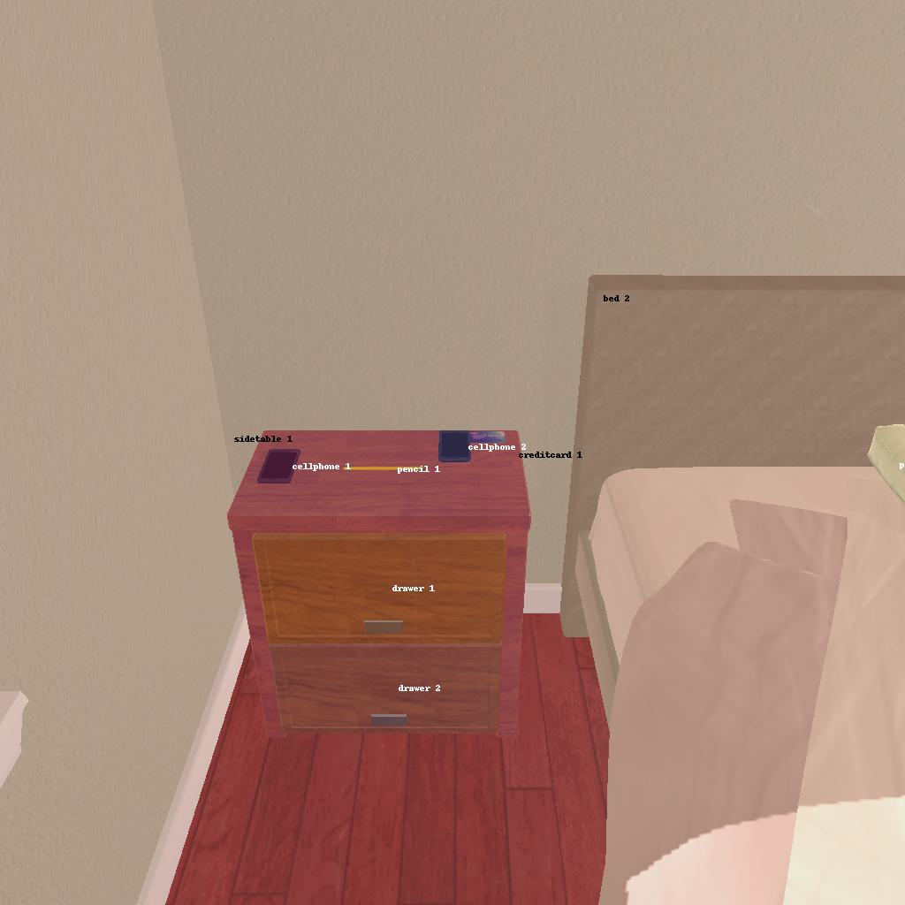

---------------------------------------------------------task: 6---------------------------------------------------------
--------------------------------------------------------------------------------------------------------------------------------------------------------------------
--------------------------------------------------------------------------------------------------------------------------------------------------------------------
Step:--------------------------------------------------------------------------3-------------------------------------------------------------------------------
----------------------------------------
VLM Prompt:
Image1:
Image2:
**Instruction**
1. Analyze the provided image to identify all visible household objects, focusing on those relevant to the task description "put some cd on safe."
2. Use the analysis of the image and the task hint "The agent must find an object of the desired type, pick it up, find the correct location to place it, and put it down there." to answer the question: what is the most reasonable action in the choices for the task description "put some cd on safe"?
4. Decide and write the answer using the template: The answer is: (i): , where i is the real number. If there is no desired object in the image, search every place based on **Initial Observation** to find the object. And if no one is exactly correct, choose a similar answer.
**Initial Observation**
You are in the middle of a room. Looking quickly around you, you can see bed (1-2), dresser (1), sidetable (1-2), drawer (1-11), desk (1), garbagecan (1), safe (1)
**Answer Choices**
(1): go to bed 1
(2): go to dresser 1
(3): go to bed 2
(4): go to sidetable 1
(5): go to sidetable 2
(6): go to drawer 3
(7): go to drawer 4
(8): go to desk 1
(9): go to garbagecan 1
(10): go to drawer 5
(11): go to drawer 6
(12): go to drawer 7
(13): go to drawer 8
(14): go to drawer 9
(15): go to drawer 10
(16): go to drawer 11
(17): go to safe 1
(18): open drawer 2
(19): close drawer 2
(20): take pillow 1 from drawer 2
(21): take cellphone 1 from drawer 2
(22): take cellphone 2 from drawer 2
(23): take creditcard 1 from drawer 2
(24): take pencil 1 from drawer 2
**Answer**
Let's think step by step by following the instructions.
----------------------------------------
----------------------------------------
Original Response:
The task description is "put some cd on safe," which implies that the agent needs to find a CD and place it on the safe.
Looking at the initial observation, there is a safe (1) mentioned, but CDs are not explicitly listed in the visible objects.
From the provided images, there are no visible CDs on the sidetable, bed, or inside the open drawer. The images are identical and do not provide any additional information about the location of a CD.
Since the task is to place a CD on the safe and we do not see any CD in the images, the next reasonable action would be to search for the CD in the locations that have not been checked yet, based on the initial observation.
The answer is: (17): go to safe 1.
----------------------------------------
----------------------------------------
>>> Refine Original VLM Response and Get Pure Action: go to safe 1
----------------------------------------
-----------------------------------------------------------------
Running time: 7.866940498352051 seconds
Total Money: 2.4972000000000008
-----------------------------------------------------------------
-----------------------------------------------------------------
Text Observation:You arrive at loc 18. The safe 1 is closed.
-----------------------------------------------------------------
UNSUCCEED